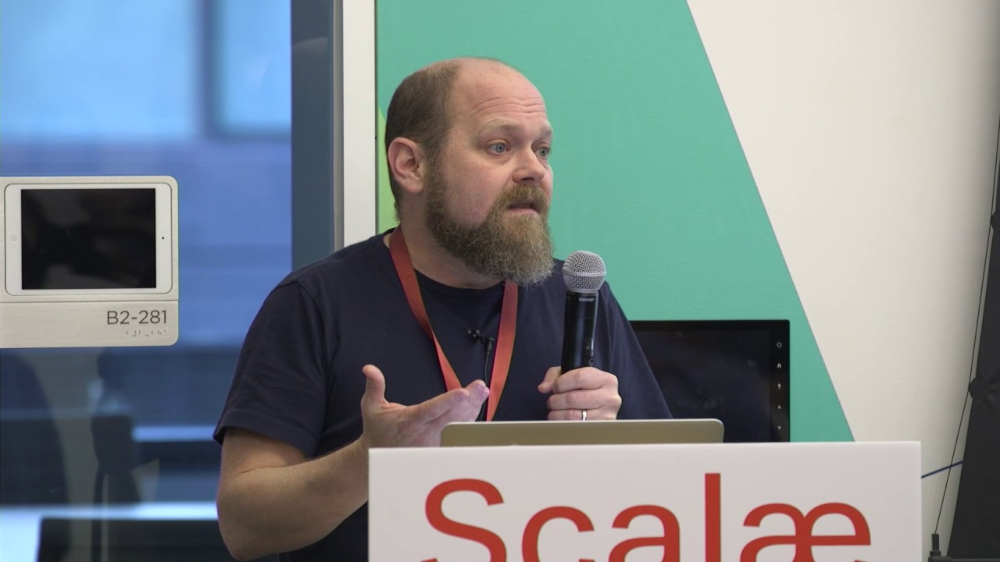

Описват влияния извън нормалното изпълнение на функциите:
Effects are good, side effects are bugs!

OptionTry/EitherListWriterStateIOIO,
FutureResourceВсички следват структурата F[_]
val right: Either[String, Int] = Right(1)
val left : Either[String, Int] = Left("Something went wrong")Either is what’s right or whatever’s left